We bridge the gap between helpers and students.
Through Edugrow, anyone can volunteer, donate, and explore the talents of government school children, and help reduce the problems in government schools.
It started with a simple question.
Edugrow is a registered NGO created by Sai Saket Bhandar, a high school student at Oakridge International School, Gachibowli.
"When we asked government school children what they would like to improve at their school, they said they wanted extracurriculars like taekwondo and art."
So we built a way for people who know these skills to share them. Beyond extracurriculars, connecting helpers with students brings guest lectures, mural-painting programmes, donations, and a platform for children to share their talents.
See our success stories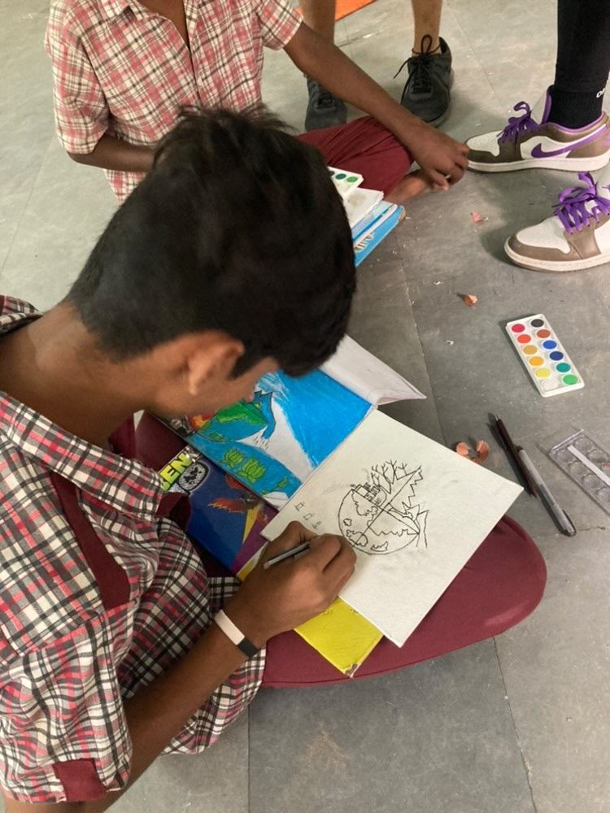
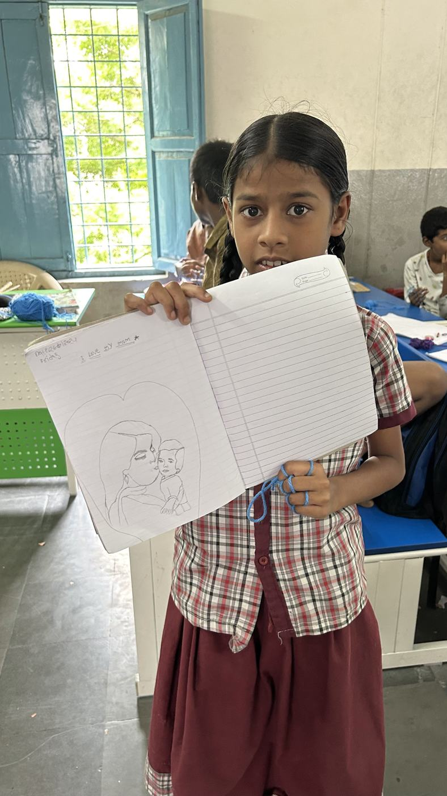
student-led
More than lessons
Extracurriculars
Art, theatre, dance, music, sports and taekwondo taught by people who love them.
Guest lectures
Talks that build awareness of important topics beyond the textbook.
Murals & projects
Programmes like painting murals that brighten up school spaces.
Donations
Books, stationery, devices and supplies matched to each school's needs.
A stage for talent
Events like our Talent Show where students show what they can do.
Tech skills
Sessions on Google Slides, Docs, Gmail, Kahoot and smart boards.
Meet the Edugrow Team
Edugrow is run entirely by students. Every year a new team picks up the work.
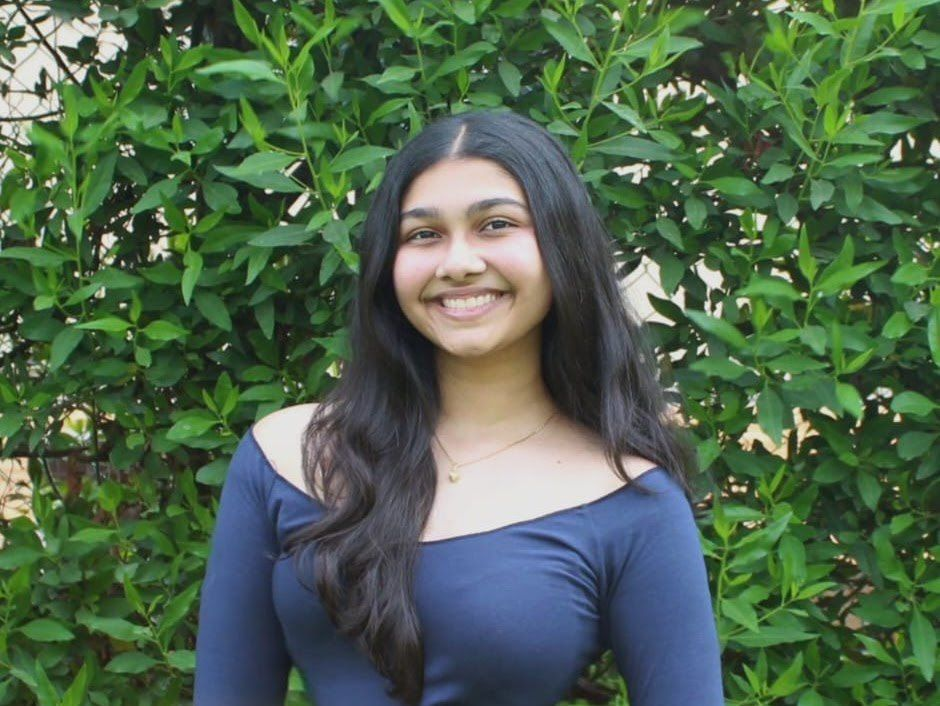
Poorvi Kurundkar
Leading Edugrow's student team this year, with six departments working together to bring more opportunities to government school children.
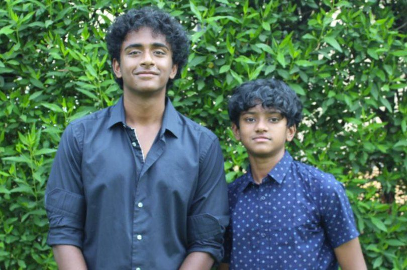
Raaghav Modukuri & Yashwanth Addala
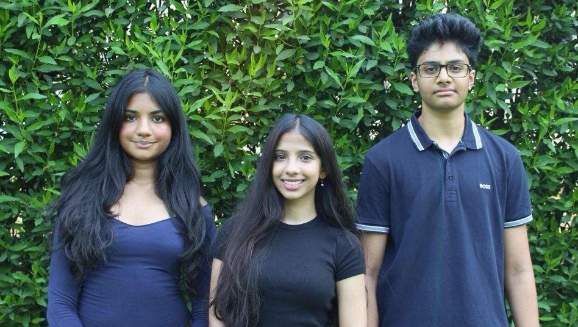
Aadya Gouravaram, Avyacktha Madas & Raghav Palla
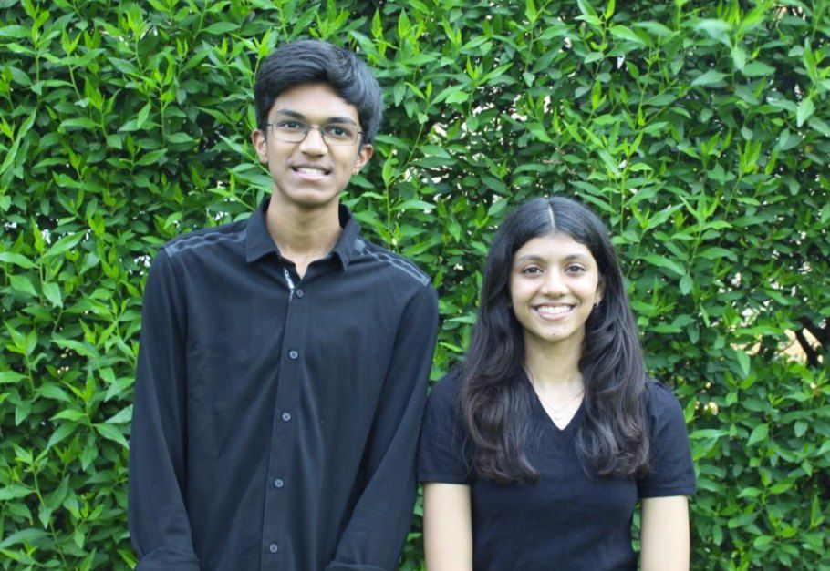
Sanjith Chellamuthu & Vennela Dulla
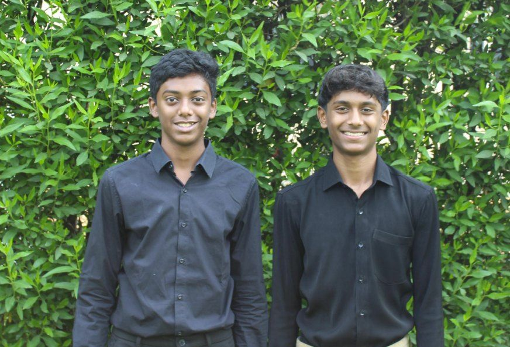
Archit Ragi & Yuvan Govindharaj
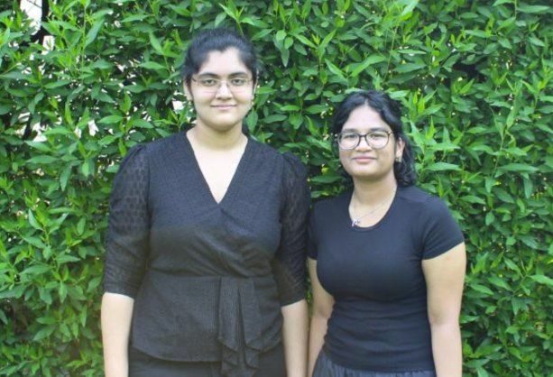
Neha Dusi & Garima Jain
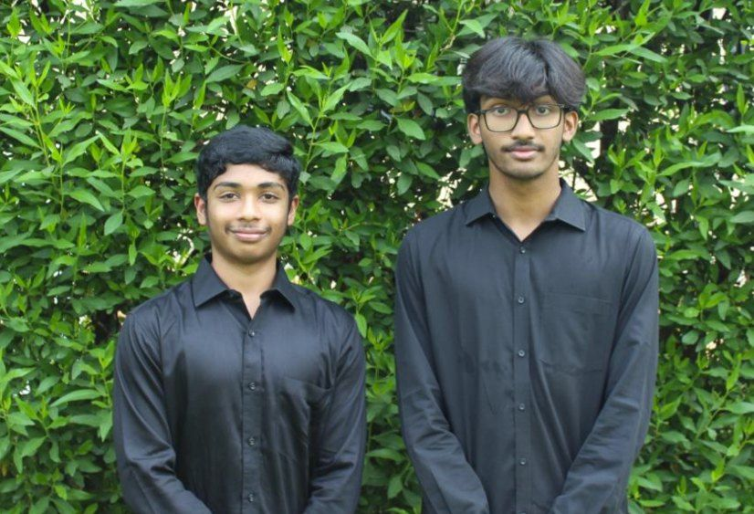
Arjun Bringi & Pratheek Konda
Tap a card to read their story.
Prior members of Edugrow · 2024
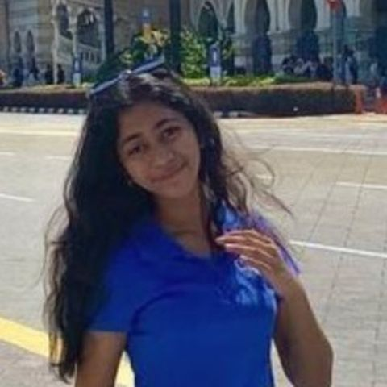
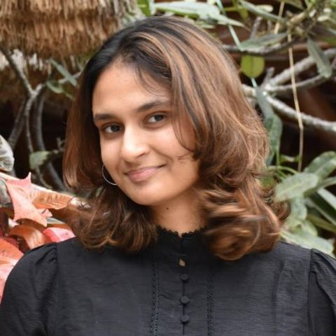
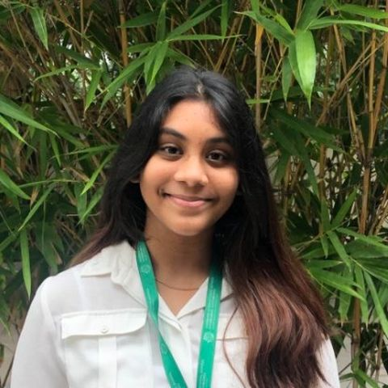
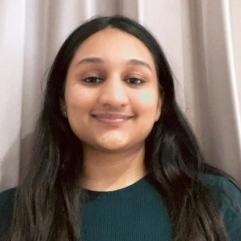
The founding team that started it all.
Sarasija
Sarasija is an IBDP student with a strong passion for Edugrow and its impactful initiatives. She finds joy in reading, binge-watching TV shows, singing, and really anything except studying. Despite her aversion to traditional studying, her involvement with Edugrow over the past year, teaching theater to 5th graders, has been a remarkable journey for her. Now, as the newly appointed leader of the Edugrow team, she is thrilled and grateful for the opportunity to continue making a positive difference. She strives to enhance Edugrow's impact and contribute to the happiness of the students and volunteers involved alongside her team.
Co-Head of MarketingPraneel Kamineni
Praneel Kamineni is a 17-year-old DP-1 student at Oakridge International School, pursuing the rigorous International Baccalaureate (IB) curriculum. As an aspiring architect, he is deeply passionate about design, creativity, and the evolution of architectural styles. His academic interests span mathematics and the arts, where he explores connections between history, art, and logic. Beyond academics, Praneel is an artist who loves expressing himself through various creative mediums, from videography and graphic design to traditional arts and crafts. His enthusiasm for cultural exploration is reflected in his love for traveling, mythology, and uncovering fascinating facts. Whether watching K-dramas, indulging in American sitcoms, or experimenting in the kitchen, Praneel's curiosity and passion fuel his vibrant personality and diverse pursuits.
Co-Head of MarketingPoorvi Kurundkar
Poorvi Kurundkar is a student passionate about reading, art and is involved in more than a handful of extracurricular activities. She hopes to help Edugrow continue to provide children with essential opportunities in education, by enhancing its media presence to create a long lasting impact as a student led NGO.
Co-Head of MarketingAvyackta
Avyackta is an MYP student who loves all things creative. When she's not lost in a book, she's rewatching Greta Gerwig's Little Women (Amy deserves more love), hoarding candles, or crying over math. As the co-head of marketing for Edugrow, she hopes to expand its reach, get more students involved and make a long-lasting impact.
Co-Head of CommunicationsRaaghav Modukuri
Raaghav Modukuri is a 14-year-old student at Oakridge. He has numerous hobbies such as playing the guitar, debating, and writing. He has been writing since 1st grade and continues to pursue it as an avid hobby, with published fiction works, and research papers. When he's not engrossed in these activities, you will either find him at the golf course swinging his clubs all day, or watching cricket. Through Edugrow, he hopes to make a huge impact on the school community and give it his all.
Co-Head of CommunicationsShloka S. Govindharaj
Shloka S. Govindharaj, the co-head of Communications, is a quick thinker and a compassionate worker. She is an open-minded individual who always works towards helping others and giving back to the world that has provided her with immense opportunities. She enjoys spending her free time with kids; listening to their tall tales and creative quests. Additionally, she is an extremely active individual, striving to get work done as efficiently and effectively as possible. With this role, Shloka aims to create a difference in the educational systems of Telangana, one step at a time!
Co-Head of FinanceRitesh Marupudi
Ritesh Marupudi serves as the co-head of Finance. A dedicated problem solver, he is on a mission to effect positive change within the community. His extensive experience and unwavering commitment render him a valuable asset to Edugrow. When he's not immersed in financial matters, Ritesh enjoys playing golf and engaging in spirited debates about geopolitics. As a skilled communicator, he aspires to elevate Edugrow to new heights.
Co-Head of FinancePratheek Konda
Pratheek Konda is an aspiring medicine student. He enjoys football and is active in the support to educate those who are financially disadvantaged. His goal is to reach 500 community service hours before he graduates, and puts his whole heart forward when it comes to the general public. Pratheek is empathetic and is known as a hard-worker who is sympathetic most of the time, mainly because he's always chucking his controllers to the wall due to his bad teammates. Pratheek is ready to take on the new adventure of being the new Co-Head of Finance for Edugrow and plans to bring great change to the government schools in Hyderabad.
Co-Head of ManagementNeha Dusi
Neha Dusi is an MYP Year 5 student who loves to read and sing in her free time. As the Co-Head of Management for Edugrow, she hopes to better equip the children with resources they need to succeed as well as plan interesting activities for them. She is passionate about education and is excited to work towards making an impact!
Co-Head of ManagementJoann Harshita Allam
Joann is a student at Oakridge International School who worked with Edugrow as a volunteer for 2 years, teaching art at Mandal Parishad, before becoming co-head of management. With a strong passion for health and well-being, she strives to show this through her work. She loves to do taekwondo and teaches other kids with a skill set. She also loves playing the electronic keyboard and hopes to show her passion and strengthen Edugrow during her time here.
Co-Head of TechnologyAnas
Hi, I am Anas, I am studying IBDP at Oakridge International School. I love films and history, a little too much, yet something that is applied in both is technology. This passion for tech is what brought me to Edugrow, to develop and support the use of technology in underprivileged schools while decreasing barriers between our volunteers and the school. I hope to serve my community the best way I know.
Co-Head of TechnologyIshita Shrivastava
Ishita Shrivastava is an IBDP student at Oakridge International School, taking Mathematics, Physics, and Chemistry at a higher level. She enjoys reading, doing art, and cooking in her free time. She is a strong believer in the positive impact good technical devices such as smartboards and projectors can have on education. Through her role as co-head of technology, she hopes to provide schools with devices that can boost their students' education.
FounderSai Saket Bhandar
Sai Saket Bhandar is a high school student studying at Oakridge International School. He started his own NGO, Edugrow, in order to ensure that everyone, not only privileged students, can receive a quality education.
Head of CommunicationsArya Sunkara
Arya Sunkara is a student at Oakridge International School. As an avid child rights activist, Arya's involvement is fueled by his wish to empower children with the Power of Opportunity.
Co-head of LogisticsSubhang Yerramsetti
I am Subhang Yerramsetti studying the diploma program at Oakridge International School. I am a math enthusiast and am very interested in extracurricular activities like skating, guitar, and cooking. Edugrow gave me an opportunity to use my learning for the better, hence I joined the team where I handle the logistics sector. I strongly believe in the cause that we fight for as it will bring an everlasting change to the public education system.
Co-head of LogisticsEsha
Esha is a student studying at Oakridge International School. She loves extracurricular activities and has participated in many social service activities. Esha has researched the application of Multiple Intelligences in Education which is why this cause spoke to her. If anything, she would love to provide children with the opportunity to experience education where they can learn in ways that best suit their abilities.
Head of FinanceVineet Chitturi
Vineet Chitturi is a high school student studying at Oakridge International School. Heavily invested in debate and Model UN, Vineet hopes that Edugrow can provide children with invaluable resources that can help them develop their passions.
Head of MarketingAnish Raja
Anish Raja, Edugrow's Head of Marketing, is a 15-year-old high school junior at Oakridge International School. He's passionate about reading, art, and writing, and hopes to bring Edugrow to further heights with regard to its presence and reach as an organization.